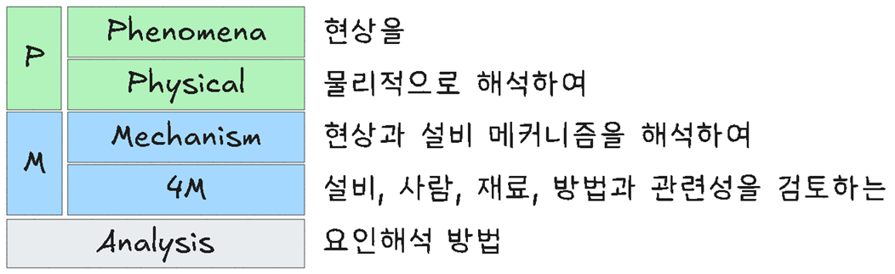

flowchart LR
subgraph sg1[TPM]
예방보전
제로지향
소집단활동
end
설비보전 관리
Keywords
설비보전, TPM, 자주보전, 설비 로스, 욕조곡선
설비보전관리
설비보전관리(Equipment Maintenance Management)는 생산설비의 정상적인 작동 상태를 유지하고, 장애를 예방하며, 설비의 수명과 생산성을 극대화하기 위한 체계적인 관리 활동을 의미한다.
설비보전의 목적
| 목적 항목 | 설명 |
|---|---|
| 설비 가동률 향상 | 고장 및 정지시간 최소화 |
| 생산성 유지/향상 | 품질, 납기, 생산량 확보 |
| 수명 연장 | 설비 투자 대비 효율성 극대화 |
| 안전 확보 | 작업자 안전과 설비 사고 예방 |
| 비용 절감 | 비계획 정비, 긴급수리 비용 최소화 |
보전 유형 분류
| 구분 | 정의 | 설명 |
|---|---|---|
| 사후보전 (Breakdown Maintenance) | 고장 발생 후 수리 | 반응적, 가장 단순하지만 리스크 큼 |
| 예방보전 (Preventive Maintenance) | 정기 점검 및 수리 | 고장 전에 계획된 유지관리 수행 |
| 예지보전 (Predictive Maintenance) | 상태 기반 보전 | 센서, 모니터링 기술 활용해 고장 예측 |
| 개선보전 (Corrective Maintenance) | 설비 개선을 통한 고장 예방 | 반복 고장의 근본 원인 제거 |
| 자주보전 (Autonomous Maintenance) | 작업자 주도 보전 활동 | TPM에서 강조, 현장 참여 중심 |
TPM (Total Productive Maintenance) 개요
TPM의 8대 활동
| 활동명 | 설명 |
|---|---|
| 자주보전 | 작업자가 주도하는 일상 관리 |
| 계획보전 | 정기 계획 수립 기반의 보전 |
| 품질보전 | 설비 불량의 근본 원인 제거 |
| 초기관리 | 설계·도입 초기부터 보전성 고려 |
| 교육훈련 | 설비·보전 기술의 체계적 교육 |
| 사무간접효율화 | 간접업무(구매, 자재 등) 개선 |
| 안전·환경 보전 | 무사고·무재해 달성 활동 |
| 개선활동 | 전사적 개선(Kaizen) 추진 |
설비 효율성 지표: OEE
OEE(Overall Equipment Effectiveness)는 설비의 종합 효율성을 나타내는 대표적인 지표로, 다음 3요소의 곱으로 계산된다.
OEE = 가동률 × 성능효율 × 품질률| 구성요소 | 설명 |
|---|---|
| 가동률 | 실제 가동시간 / 계획 가동시간 |
| 성능효율 | 실제 생산량 / 이론 생산량 |
| 품질률 | 양품 수량 / 전체 생산 수량 |
목표 기준:
- 가동률 90% 이상
- 성능효율 95% 이상
- 품질률 99% 이상 → OEE 85% 이상이 이상적 목표
설비보전 프로세스
- 설비 이력 관리
- 점검 기준 수립 및 일정 관리
- 보전 작업의 표준화
- 고장 원인 분석 (예: 고장분석표, 5Why, FTA 등)
- 예비부품 재고 관리
- 성과 측정 및 지속 개선
최근 동향: 스마트 보전
| 기술 | 설명 |
|---|---|
| IoT 센서 | 설비 진동, 온도, 소음 등을 실시간 수집 |
| 예지보전(PdM) | AI 기반 고장 예측 및 조치 |
| CMMS | 전산화된 설비 유지관리 시스템 |
| 디지털 트윈 | 가상 설비 모델 통한 시뮬레이션 보전 |
설비보전
시대적 발전 단계
설비보전은 초기의 단순한 고장 수리에 그치지 않고, 사전 예방 → 예측 → 자주관리 → 스마트 관리로 점차 발전해 왔다. 아래는 시대별 주요 보전 방식과 특징이다.
시대별 보전 발전 단계
| 시기 | 보전 단계 | 특징 | 키워드 |
|---|---|---|---|
| ~1940년대 | ① 사후보전 (Breakdown Maintenance) | - 고장 발생 후 수리 중심 - 보전 = 수리 |
고장나면 수리한다 |
| 1950~60년대 | ② 예방보전 (Preventive Maintenance) | - 고장 전 계획된 정비 실시 - 정기 점검 도입 - 수명 기반 교체 |
계획정비, PM |
| 1970년대 | ③ 예지보전 (Predictive Maintenance) | - 설비 상태를 실시간 모니터링 - 센서/계측기를 통한 고장 예측 |
진단보전, 상태기반 |
| 1980년대 | ④ 자주보전 + TPM (Total Productive Maintenance) | - 작업자 주도의 설비관리 (자주보전) - 전원참여형 보전 활동 - OEE, 8대 Pillars |
TPM, OEE, 개선보전 |
| 1990~2000년대 | ⑤ RCM (Reliability-Centered Maintenance) | - 신뢰성 기반 보전 - 핵심설비 중심 보전 전략 수립 - 위험도 고려한 보전 |
설비중요도, 리스크 기반 |
| 2010년대 이후 | ⑥ 스마트 보전 / 예지보전 4.0 | - IoT, AI, 빅데이터 기반 보전 - 디지털 트윈 활용 - CMMS 시스템 도입 |
Predictive Maintenance, Smart Factory, DT |
| 2020년대~ | ⑦ 자율보전 + 디지털 통합보전 | - 자율보전 + AI 추천 + 자동화 대응 - 전 공정 연계된 통합 플랫폼 운영 |
자율형 보전, AI Maintenance, MES 연계 |
발전 흐름 도식 요약
사후보전 → 예방보전 → 예지보전 → 자주보전(TPM) → 신뢰성중심보전(RCM) → 스마트/AI보전보전 전략별 특징 요약
| 구분 | 접근 방식 | 주체 | 기술 활용 | 효과성 |
|---|---|---|---|---|
| 사후보전 | 고장 후 수리 | 정비부서 | 없음 | 낮음 |
| 예방보전 | 시간기반 계획 | 정비부서 | 제한적 | 중간 |
| 예지보전 | 상태기반 예측 | 정비부서 | 센서, 계측기 | 높음 |
| 자주보전 | 작업자 중심 일상관리 | 작업자 | TPM 기반 | 높음 |
| RCM | 중요설비 중심 | 분석/기획팀 | 통계/신뢰성 | 높음 |
| 스마트 보전 | AI·IoT 기반 예측 | 정비 + IT | 센서 + 데이터 분석 | 매우 높음 |
TPM(전사적 생산보전)
TPM(Total Productive Maintenance, 전사적 생산보전)은 전 사원이 참여하여 생산설비의 종합적 생산효율(OEE)을 극대화하기 위한 설비 중심의 생산혁신활동이다. 단순한 보전(Maintenance) 개념을 넘어서, 생산성 향상, 품질 향상, 낭비 제거, 무사고·무고장·무불량을 달성하고자 하는 전사적 개선활동이다.
TPM의 핵심 개념
| 항목 | 설명 |
|---|---|
| 전원참가 보전 | 관리자, 정비자, 작업자 모두가 참여 |
| 설비 중심 개선 | 설비의 효율 향상 및 낭비 제거 |
| 예방 중심 | 고장, 불량, 낭비를 미연에 방지 |
| 지속적 개선 (Kaizen) | 작은 개선을 계속 추진 |
| 자주보전 활동 | 작업자가 설비를 관리하며 이상을 조기에 감지 |
| OEE 지표 중심 관리 | 가동률, 성능, 품질률을 통한 설비 효율 관리 |
TPM의 목적
| 목적 | 상세 내용 |
|---|---|
| 설비 효율 극대화 | OEE 향상, 무고장, 무정지 |
| 무사고·무불량·무낭비 실현 | 품질·안전·환경 측면의 개선 |
| 자주보전 체계 정립 | 작업자 주도의 설비 관리 |
| 부서 간 협업 강화 | 생산·보전·기술·품질 부문의 통합 활동 |
| 기업 체질 개선 | 체계적인 개선문화 정착, 전사 혁신 체계 구축 |
TPM의 8대 활동 Pillars

초기 생산부분에 있어 TPM은 아래 5가지 활동을 중심으로 전개하였다.
- 설비 효율화 개별 개선
- 자주 보전 체계 구축
- 보전 부문 계획 보전 체제 구축
- 운전, 보전 교육 훈련
- 제품 및 설비 초기 관리 체제 구축
이후 생산 외 부문으로, 전사적으로 확산되면서 아래 3가지 활동이 추가되었다.
- 품질 보전 체제 구축
- 관리 간접 부문 효율화 체제 구축
- 안전, 위생과 환경 관리 체제 구축
각 활동과 주요 내용은 다음과 같다.
| 활동 | 주요 내용 |
|---|---|
| 자주보전 | 작업자 스스로 정해진 기준에 따라 설비 유지, 관리를 실시하기 위한 체제 구축 |
| 계획, 예지보전 | 보전 부문을 중심으로 한 활동으로 계획 보전 체계를 구축 |
| 교육, 훈련 | TPM 활동을 수행하기 위해 필요한 지식, 기능, 태도를 습득 |
| 개별 개선 | 현장 불합리 및 생산효율화를 저해하는 각종 로스를 제거하기 위한 소개선 및 테마 활동 (고장로스, 준비교체/조정로스, 공구 교환 로스, 순간 정지/공전 로스, 속도 저하로스, 불량/수정로스, 초기 유동 로스) |
| 설비 초기 관리(MP) 초기유동 관리 |
생산기술 부문을 중심으로 한 활동, 설비 도입 시기에 초기 트러블 발생을 방지하는 활동 |
| 품질관리 | 만성 불량 zero 지향, 불량을 만들지 않는 조건 설정 및 조건 관리하는 활동 |
| 사무간접 부분 효율화 | 관리, 사무, 지원 부문에 있어 사무 효율화 개선과 사무 환경 개선을 추진하는 활동 |
| 안전 환경 보전 | 안전 및 환경오염 위해 요소 박멸 및 안전 환경 시스템을 구축 |
TPM 추진 단계
| 단계 | 설명 |
|---|---|
| 1단계 | TPM 도입 선언 및 교육, 목표 설정 |
| 2단계 | 자주보전 활동 개시 (청정화, 이상 발견) |
| 3단계 | 계획보전, 품질보전 체계 구축 |
| 4단계 | 8대 활동 전개 및 OEE 측정 |
| 5단계 | 전사적 확산 및 TPM 수준 향상 |
| 6단계 | 무고장·무사고·무불량 수준의 정착 |
TPM의 주요 성과지표
OEE(Overall Equipment Effectiveness)
OEE = 가동률 × 성능효율 × 품질률| 항목 | 정의 |
|---|---|
| 가동률 | 설비의 실제 가동시간 / 계획 가동시간 |
| 성능효율 | 실제 생산량 / 이론 생산량 |
| 품질률 | 양품 수량 / 총 생산 수량 |
OEE 목표 기준
- 가동률 ≥ 90%, 성능 ≥ 95%, 품질 ≥ 99% → OEE ≥ 85% 이상이 이상적
TPM의 효과
| 구분 | 효과 |
|---|---|
| 생산성 향상 | 낭비 제거, 생산량 증가, 납기 준수 |
| 품질 향상 | 설비 기인 불량 감소 |
| 보전비 절감 | 고장 예방, 긴급 수리 최소화 |
| 작업자 역량 향상 | 자율적 설비 관리 능력 향상 |
| 조직문화 개선 | 전사적 참여, 개선문화 정착 |
TPM과 관련 개념 비교
| 구분 | TPM | PM | RCM | 스마트보전 |
|---|---|---|---|---|
| 목적 | 생산성/참여형 개선 | 예방정비 | 중요설비 위주 전략 | 예측 기반 자동보전 |
| 주체 | 전사원 참여 | 정비부서 | 분석조직 | IT/AI 시스템 |
| 중심 | 사람 중심 보전 | 계획 기반 | 리스크 중심 | 데이터 기반 |
TPM 주요내용
예방보전(preventive maintenance)
- 예방 조건 확립(문제 파악, 미연에 방지)
- 물리적, 심리적 결함 배제
- 강제 열화 배제
- 만성 불량 박멸
- 고유 수명 연장
제로지향(zero defect)
- 경쟁사 수준과 관계없이 제로 지향으로 간다면 경쟁에서 승리
- 경쟁사도 제로 지향이면 스피드가 승부 관건
소집단활동(small group activity)
- 전원 참여 경영
- 조직 구성원 능력을 향상
- 의욕을 갖도록 셀조직 활성화
- 조직 성과 극대화
TPvM(전사적 예방보전)
TPM(Total Preventive Maintenance, 전사적 예방보전)은 설비와 장비의 가용성을 극대화하고 생산성을 높이기 위해 전사적으로 추진하는 보전 활동이다. TPvM은 설비의 고장과 불량을 예방하고, 설비 수명을 연장하는 것을 목표로 한다.
TPvM의 특징
- 전사적 참여: 경영진부터 현장 작업자까지 모든 구성원이 보전에 참여한다.
- 예방 중심: 설비 고장을 사전에 예방하고 문제 발생을 최소화한다.
- 자주 보전: 작업자가 일상적으로 설비를 점검하고 유지한다.
- 설비 효율성 향상: 설비의 가동률과 생산성을 극대화한다.
- 교육 및 훈련: 설비 보전 및 관리 기술에 대한 교육을 지속적으로 실시한다.
TPvM의 효과
- 설비 가동률 향상
- 생산성 증가 및 품질 향상
- 설비 고장 및 가동 중단 시간 감소
- 설비 수명 연장 및 유지 비용 절감
| 구분 | Total Productive Maintenance (TPM) | Total Preventive Maintenance (TPvM) |
|---|---|---|
| 정의 | 전사원이 참여하여 설비 효율을 극대화하는 종합적 생산보전 | 설비 고장을 예방하기 위한 전사적 예방정비 활동 |
| 목적 | 설비 효율(OEE) 극대화, 무고장, 무사고, 무불량 달성 | 설비 고장 방지, 가동률 확보, 계획적 정비 운영 |
| 주체 | 전 사원 (작업자 + 관리자 + 정비자 등) | 주로 정비부서 중심, 일부 작업자 참여 가능 |
| 적용 범위 | 생산설비뿐 아니라 사무, 품질, 안전, 교육 등 포괄적 | 설비 자체의 보전/정비 업무에 국한 |
| 철학 | 설비는 사용하는 사람이 지킨다 (자주보전 중심) | 설비는 정비 전문가가 관리한다 |
| 대표 활동 | 자주보전, 계획보전, 품질보전, 초기관리, 교육훈련 등 8대 Pillar | 예방보전(PM), 점검, 주기적 교체 등 |
| 성과지표 | OEE, MTBF, MTTR, 무고장 일수 등 | 고장건수 감소, 정비시간 단축, 가동률 향상 등 |
Total Preventive Maintenance는 TPM의 한 구성요소인 계획보전(Planned Maintenance)과 개념적으로 유사하나 TPM은 예방보전보다 상위 개념으로, 자주보전과 전사적 개선 활동을 포함한다. 따라서 Total Preventive Maintenance는 TPM의 초기 단계 또는 구성 개념 중 하나로 포함되기도 한다.
활동 간 개념을 시각적으로 정리하면 다음과 같다.
예방보전(PM) ⊂ Total Preventive Maintenance ⊂ TPMTPM은 Total Preventive Maintenance보다 더 넓고 전략적인 개념으로, 생산성 혁신과 조직문화 개선을 함께 추구한다.
생산보전(PM)
생산보전(Productive Maintenance, PM)은 설비의 생산성을 유지하거나 향상시키기 위해 수행되는 모든 보전활동을 의미하며, 설비의 고장 예방과 성능 보존을 위한 체계적인 정비 및 관리 활동이다. 이는 단순한 사후 정비를 넘어서, 예방·예측·계획적 활동을 포함하는 종합적 설비관리 개념이다.
목적
| 목적 | 설명 |
|---|---|
| 설비 가동률 향상 | 불시 고장 및 정지시간 최소화 |
| 품질 안정화 | 설비 기인 불량 예방 |
| 보전비용 절감 | 긴급정비 감소 및 효율적 정비자원 운용 |
| 설비 수명 연장 | 주기적 점검과 관리로 마모 및 고장 방지 |
| 생산 계획의 안정성 확보 | 예측 가능한 설비 운영 |
생산보전의 분류
| 분류 | 설명 | 특징 |
|---|---|---|
| 사후보전 (Breakdown Maintenance) | 고장 발생 후 정비 | 반응적, 긴급대응 |
| 예방보전 (Preventive Maintenance) | 고장이 발생하기 전에 주기적으로 점검 및 부품 교환 | 일정 기반 유지관리 |
| 예측보전 (Predictive Maintenance) | 센서, 진단기술 등으로 설비 상태를 실시간 모니터링하여 고장 예측 | 상태 기반 유지관리 |
| 정기보전 (Scheduled Maintenance) | 생산계획과 연계된 정해진 일정에 따라 수행 | 계획성과 생산연계성 중시 |
| 계획보전 (Planned Maintenance) | 예방보전과 정기보전을 포함하여 조직적이고 문서화된 관리 방식 | TPM에서 중점 활동 중 하나 |
flowchart LR A["설비보전"] --> B["계획보전"] A --> C["비계획보전"] A --> D["자가보전"] A --> E["개선보전"] subgraph sg1["계획보전"] direction TB B1["예방보전 (PM)"] --> B1a["정기보전 (TBM)"] B1 --> B1b["예지보전 (CBM)"] B1 --> B1c["일상점검"] B2["사후보전 (CM)"] B3["보전예방"] B4["개량보전"] B --> B1 & B2 & B3 & B4 end subgraph sg2["비계획보전"] direction TB C1["긴급보전"] C --> C1 end subgraph sg3["자가보전"] direction TB D1["작업자 중심 유지관리"] D2["청소, 점검, 급유, 조정"] D --> D1 & D2 end subgraph sg4["개선보전"] direction TB E1["고장개선"] E2["설비개선"] E --> E1 & E2 end
- 계획보전(SM, scheduled/planned maintenance)
-
- 예방 보전을 위해 어떤 일정 기간을 정해서 정기적으로 기계 보수, 보전 작업을 실시
- 예방보전(PM, preventive maintenance)
-
- 점검 기간이나 설비 상태에 따라 보전 활동 실시
- 정기 보전(TBM, time based maintenance)
-
- 정기적인 점검과 수리로 고장을 미연에 방지해 설비 수명을 연장하는 활동
- 예지보전(PM, predictive maintenace 또는 CBM, condition based maintenance)
-
- 설비 상태에 따라 설비 보전 활동
- 사후보전(BM, break down maintenance)
-
- 설비나 장치가 기능저하 또는 기능정지(고장정지)된 뒤에 보수, 교체를 실시하는 것으로 예방보전(사전 처리)을 하기 보다도 사후 보전하는 편이 경제적인 기기에 대해 적용
- 개량보전(CM, corrective maintenance)
-
- 설비 신뢰성, 보전성, 안전성 등의 향상을 목적으로 현 설비의 열악한 부분을 계획적이고 적극적으로 개선하여 열화 및 고장을 감소시키도록 보전 및 수리가 쉽도록 하는 활동
- 보전예방(MP, maintenance prevention)
-
- 설비를 새로 계획, 설계하는 단계에서 보전 정보나 새로운 기술을 채용해서 신뢰성, 보전성, 경제성, 조작성, 안전성 등을 고려하여 보전비나 열화 손실이 적도록 처음부터 보전이 필요하지 않도록 설계하는 방법
주요 보전 방식 비교
| 구분 | 사후보전 | 예방보전 | 예측보전 |
|---|---|---|---|
| 개념 | 고장 후 수리 | 고장 발생 전 정기 점검 | 실시간 상태 기반 정비 |
| 특징 | 반응형 | 주기적, 예방 중심 | 기술 기반 예지형 |
| 비용 | 초기 저렴하나 고장 시 고비용 | 중간 수준 유지 | 초기 고비용, 장기 저비용 |
| 예 | 전등 고장 후 교체 | 모터 매 3개월마다 윤활 | 진동 센서로 베어링 이상 조기 감지 |
생산보전의 핵심 요소
| 요소 | 설명 |
|---|---|
| 설비이력관리 | 고장 이력, 정비 이력 기록 및 분석 |
| 정비계획 수립 | 설비별 주기, 소요자원, 시간 계획 |
| 점검기준 설정 | 이상 유무 판단 기준의 정량화 |
| 부품관리 체계 | 소모품 및 교체 부품 재고 관리 |
| 정비기술 교육 | 정비자의 숙련도 및 다기능화 향상 |
TPM과의 관계
| 구분 | 생산보전 (PM) | TPM |
|---|---|---|
| 범위 | 설비 중심 정비관리 | 전사적 설비 효율 혁신 |
| 주체 | 정비부서 중심 | 전 사원 참여 |
| 목적 | 설비 유지 및 고장 예방 | 무고장·무불량·무사고 실현 |
| 구성 | 예방·예측·계획보전 등 | 자주보전 포함 8대 Pillar 운영 |
※ TPM의 계획보전 활동(Pillar 2)은 PM의 내용을 내포하며 이를 조직적으로 확장한 개념
생산보전 도입 시 기대 효과
| 구분 | 기대 효과 |
|---|---|
| 설비관리 | 고장건수 감소, MTBF 증가, MTTR 감소 |
| 품질관리 | 설비 기인 불량률 감소 |
| 생산관리 | 납기 준수율 향상, 생산성 증가 |
| 비용관리 | 정비예산 절감, 재고 최적화 |
| 조직역량 | 정비기술 향상, 설비운영 표준화 |
| 산보전을 포괄하며 전사적 혁신 활동으로 발전시킨 개념 |
강제열화와 자연열화
설비는 시간의 흐름이나 사용 조건에 따라 성능이 점차 저하되며, 이를 열화(Deterioration)라고 한다. 설비 열화는 크게 자연적인 요인에 의한 자연열화와 사용자 또는 외부 요인에 의한 강제열화로 구분된다.
| 구분 | 정의 |
|---|---|
| 자연열화 (Natural Deterioration) | 설비를 정해진 조건하에 사용했음에도 불구하고 시간 경과 또는 반복 사용에 따라 자연적으로 성능이 저하되는 현상 |
| 강제열화 (Forced Deterioration) | 잘못된 사용, 유지관리 미흡, 과부하 등의 인위적 요인으로 인해 설비 성능이 비정상적으로 빨리 저하되는 현상 |
주요 비교
| 구분 | 자연열화 (Natural) | 강제열화 (Forced) |
|---|---|---|
| 발생 원인 | 마모, 부식, 피로 등 자연적인 물리적/화학적 변화 | 과부하 운전, 청소 부족, 조작 실수, 윤활 미흡 등 |
| 진행 속도 | 느림, 예측 가능 | 빠름, 예측 어려움 |
| 예방 가능성 | 부분적으로 가능 (주기적 정비) | 예방 가능 (관리 활동으로 방지) |
| 관리 초점 | 보전 주기 설정, 수명 예측 | 자주보전, 작업자 교육, 관리 체계 개선 |
| 대표 예시 | 모터 베어링의 마모, 윤활유의 산화 | 필터 막힘 방치, 과속 운전, 무리한 조작 |
| 관련 활동 | 예방보전, 예측보전 | 자주보전, 표준작업, 이상 조기발견 활동 |
TPM 관점에서의 접근
| 활동 | 자연열화 대응 | 강제열화 대응 |
|---|---|---|
| 자주보전 | 일상 점검, 이물 제거 등 기본 조건 확보 | 작업자 주도의 이상 발견 및 예방 |
| 계획보전 | 주기적 교체, 수명 기반 정비 계획 수립 | 오조작/오운전 방지 교육, 과부하 방지 시스템 구축 |
| 교육훈련 | 열화 원인에 대한 이해 증진 | 올바른 사용 방법 훈련, 표준작업 준수 |
강제열화는 관리 부주의로 인해 발생하는 경우가 많으므로, 올바른 운영 및 유지보수를 통해 예방이 가능하다. 반면 자연열화는 피할 수 없지만, 예방 보전(Preventive Maintenance)과 예지 보전(Predictive Maintenance) 등을 통해 진행 속도를 늦출 수 있다.
구분 예방보전 (Preventive Maintenance) 예지보전 (Predictive Maintenance) 개념 일정 주기 또는 사용 시간 기준으로 정기적인 점검 및 부품 교체를 수행하는 방식 센서와 데이터 분석을 기반으로 설비 상태를 실시간으로 모니터링하고, 이상 징후를 사전에 감지하여 보전 보전 기준 시간(Time-based) 또는 사용량(Usage-based) 기준 설비 상태(State-based) 기준 예시 - 매 6개월마다 베어링 교체- 매일 정해진 시간에 윤활유 주입 - 진동 센서로 모터 이상 감지- 온도 상승 패턴 분석 후 과열 경고 필요 데이터 설비 이력, 사용 시간, 매뉴얼 등 센서 데이터(온도, 진동, 소리 등), AI 분석, IoT 플랫폼 도입 난이도 상대적으로 낮음 (기본적인 보전 체계로 널리 활용) 도입 복잡도 높음 (센서, 분석 시스템, IT 인프라 필요) 장점 - 체계적이고 단순한 운영 가능- 계획 수립 용이 - 고장 직전에만 보전 가능해 과잉보전 방지- 예기치 못한 고장 최소화 단점 - 필요 없는 부품 교체 발생 가능- 과잉 보전으로 비용 증가 - 고급 인프라와 전문 인력이 필요- 초기 투자 비용 큼 적용 대상 구조 단순, 예측 어려운 설비 고장 징후가 센서로 감지 가능한 설비 (예: 모터, 펌프, 베어링 등)
- 사례비교
설비 예방보전 적용 예지보전 적용 공장 배관 1년마다 교체 누수 센서로 수압 이상 감지 시 교체 산업용 모터 6개월마다 윤활유 교체 진동 이상 패턴 발생 시 윤활유 교체
돌발로스와 만성로스

설비 및 생산 시스템에서 발생하는 손실(loss)은 발생 양상과 대처 방식에 따라 돌발로스(Sporadic Loss)와 만성로스(Chronic Loss)로 구분된다. 이 구분은 TPM 활동, 품질 개선, 설비 효율화 등의 핵심 개념이다.
| 구분 | 정의 |
|---|---|
| 돌발로스 (Sporadic Loss) | 갑자기 비정상적인 현상이 발생하여 즉각적인 문제로 나타나는 손실 |
| 만성로스 (Chronic Loss) | 오랜 시간 동안 지속되어 왔으며, 명확한 원인이 즉각적으로 식별되지 않는 손실 |
주요 비교
| 항목 | 돌발로스 (Sporadic Loss) | 만성로스 (Chronic Loss) |
|---|---|---|
| 발생 형태 | 갑작스러운 이상/고장 발생 | 서서히 누적되는 성능 저하 |
| 원인 | 비교적 명확, 특정 이벤트 | 불명확, 구조적·복합적 문제 |
| 발견 난이도 | 비교적 쉬움 (눈에 띔) | 어려움 (일상화되어 인식 안 됨) |
| 대응 방식 | 신속한 조치로 복구 (소방적 대응) | 원인 분석 및 개선 활동 필요 |
| 예시 | 설비 급정지, 제품 불량 급증 | 지속적인 사이클타임 증가, 낮은 작업 효율 |
| 개선 활동 | 문제 해결 중심 | 체계적 개선 활동 필요 (KAIZEN, 5WHY 등) |
| 측정 방법 | 설비 가동률, 불량률 급변 등 | 트렌드 분석, 베이스라인 비교 등 |
TPM에서의 대응
| TPM 활동 영역 | 돌발로스 대응 | 만성로스 대응 |
|---|---|---|
| 자주보전 | 이물 제거, 청결 상태 유지 등 일상점검 강화 | 설비 기초조건 회복, 표준작업 준수 |
| 계획보전 | 긴급보전/응급대응 프로세스 구축 | 설비 수명 데이터 축적, 예지보전 |
| 개선활동(KAIZEN) | 원인 제거를 통한 재발방지 | 장기적인 개선과제 도출 및 실행 |
| 교육훈련 | 비상조치 숙련도 향상 | 문제 인식력 및 개선역량 향상 |
사례 예시
| 구분 | 사례 |
|---|---|
| 돌발로스 | 모터 고장으로 생산라인 정지, 컨베이어 벨트 파손, 불량률 급증 |
| 만성로스 | 작업 전 준비시간 증가, 반복적인 셋업 미숙, 조작 미세불량 누적, 불필요한 동작시간 |
개선 접근법
| 단계 | 활동 | 설명 |
|---|---|---|
| ① | 로스 파악 | 데이터 기반으로 손실 유형 분류 |
| ② | 문제 유형화 | 돌발 vs 만성 구분 |
| ③ | 우선순위 결정 | 영향도, 빈도 등 고려 |
| ④ | 개선 방식 적용 | 돌발: 즉시조치 / 만성: 근본 개선 |
| ⑤ | 표준화 및 교육 | 재발방지 및 작업자 정착 |
고장강도율
고장 강도율(Failure Intensity, 고장 발생 강도율)은 일정 시간 동안 시스템이나 부품에서 발생하는 고장 수의 평균값을 나타내는 지표이다. 주로 신뢰성 공학이나 소프트웨어 신뢰성 평가, 설비 관리 등에서 사용되며, 시간 단위당 고장 발생 횟수를 의미한다.
고장강도율은 다음과 같이 정의할 수 있다.
| 구분 | 설명 |
|---|---|
| 고장 강도율 (λ, lambda) | 일정 시간 동안 시스템에서 발생하는 단위 시간당 평균 고장 수 |
| 단위 | 고장/시간 (예: 건/시간, failures/hour) |
고장 강도율은 다음과 같이 표현된다.
\[\lambda(t) = \frac{dN(t)}{dt}\]
\(N(t)\): 시간 t까지 누적된 고장 수
\(\lambda(t)\): 시간 t에서의 고장 강도율
평균적인 경우에는 아래와 같이 간단히 계산 가능하다.
\[\lambda = \frac{총 고장 수}{총 운영 시간}\]
관련 주요 개념을 비교하면 다음과 같다.
| 지표 | 설명 | 단위 |
|---|---|---|
| 고장 강도율 (λ) | 단위 시간당 고장 발생 비율 | 고장/시간 |
| 평균 고장 간격 (MTBF) | 고장 간 평균 시간 (수리가 가능한 시스템) | 시간 |
| 평균 수명 (MTTF) | 고장까지의 평균 시간 (수리가 불가능한 시스템) | 시간 |
고장 강도율과 MTBF는 역수 관계를 가진다 (특정 조건에서).
\[\lambda = \frac{1}{MTBF}\]
- 예시 1: 기계 설비 고장 분석
- 한 기계가 1,000시간 동안 운전되었고 이 기간에 5번의 고장이 발생했다면,
\[\lambda = \frac{5}{1000} = 0.005 \, \text{건/시간}\]
- 예시 2: 소프트웨어 테스트
- 어떤 소프트웨어가 테스트 중 100시간 동안 20건의 오류가 발생했다면,
\[\lambda = \frac{20}{100} = 0.2 \, \text{건/시간}\]
주요 활용 사례는 다음과 같다.
| 분야 | 활용 목적 |
|---|---|
| 설비 관리 | 설비별 고장 발생 추이 분석, 예방보전 계획 수립 |
| 품질 관리 | 부품별 고장률 파악, 공급업체 신뢰도 분석 |
| 소프트웨어 엔지니어링 | 소프트웨어 출시 전 신뢰도 예측 |
| 신뢰성 시험 | 제품 출시 전 MTBF 및 고장률 도출 |
- 주의사항
-
- 고장 강도율은 시간에 따라 증가하거나 감소할 수 있다 (예: 초기 고장 → 안정기 → 마모기).
- 시스템의 수리 여부, 운영 환경, 사용 조건에 따라 고장 강도율은 크게 달라질 수 있다.
참고로 고장률 변화 패턴으로 욕조곡선이 있다. 욕조 곡선(Bathtub Curve)은 시간에 따른 고장률 변화 패턴을 보여주는 대표적 모델이다.
| 구간 | 설명 | 고장 강도율 추세 |
|---|---|---|
| 초기 고장기 | 제조 결함 등으로 고장률 높음 | 감소 |
| 정상 사용기 | 안정적인 성능 유지 | 일정 |
| 마모 고장기 | 노후화로 인한 고장 증가 | 증가 |
자주보전 7단계
자주보전1 7단계는 TPM(Total Productive Maintenance, 전사적 생산보전) 활동 중 핵심적인 운전자가 주체가 되어 설비를 관리하는 체계를 의미한다. 설비의 초기 열화 요인 제거와 자율적인 유지보수 역량 강화를 통해 고장을 예방하고 생산성을 높이는 데 목적이 있다.
- 자주보전 7단계 요약표
-
단계 주요 활동 목적 1단계 초기청소 오염 제거 및 결함 발견 능력 향상 2단계 오염원/불편 개선 오염·결함 재발 방지 및 접근성 개선 3단계 청소·급유 기준 설정 설비 관리 기준화 및 이상 조기 감지 4단계 일반점검 교육 및 훈련 운전자의 점검 역량 향상 5단계 자율점검 체계화 운전자의 일상 점검 정착 6단계 표준화 관리 및 작업 표준서 작성·정착 7단계 자율관리 실현 자주보전 정착 및 고도화
단계별 설명 및 예시는 다음과 같다.
- 1단계: 초기 청소
-
- 설비의 외부 및 내부 오염을 제거하고, 이상 징후(누유, 이완, 파손 등)를 직접 확인함.
- 기능 회복 + 문제 인식 능력 강화가 목적.
예시: 설비 커버를 열고 오염 제거, 풀어진 볼트 조임, 누유 제거 등
- 2단계: 오염원 및 불편개선
-
- 자주 발생하는 오염이나 불편 사항의 근본 원인을 제거.
- 청소·급유의 작업 효율을 높이기 위한 설비 구조 개선.
예시: 기름 샘 방지를 위해 실링 보강, 급유 위치를 운전자가 쉽게 접근 가능한 곳으로 이동
- 3단계: 청소·급유 기준 설정
-
- 운전자 스스로 청소, 급유, 점검을 할 수 있도록 기준서를 만들고 주기화함.
- 이상 조기 발견 체계 구축
예시: 윤활 주기와 급유량 표시, 점검 포인트 라벨링 등
- 4단계: 일반점검 교육 및 훈련
-
- 보전 담당자가 하던 점검 항목을 운전자가 수행할 수 있도록 기술 교육 실시
- 센서 이상, 체결 상태, 벨트 장력 등의 기초 점검 역량을 강화함
예시: 베어링 온도 체크법, 체인 장력 확인 방법 교육
- 5단계: 자율점검 체계화
-
- 교육받은 운전자가 정기적으로 점검을 수행하고 기록함
- 자율 점검을 일상 업무에 통합하는 단계
예시: 주간 점검표 작성, 설비 옆 점검 보드 부착
- 6단계: 표준화
-
- 작업자 간의 편차를 줄이기 위해 관리 항목, 절차, 기준을 문서화함
- 청소·급유·점검 표준서, 이상 발생시 대응 프로세스 명확화
예시: 설비별 점검표 양식 통일, 표준 작업지도서 작성
- 7단계: 자율관리 실현
-
- 자주보전이 습관화되어 자율적으로 운영됨
- 문제 발견 → 개선 → 정착 → 공유의 선순환 구조 정착
예시: 운전자가 이상 발견 시 개선 제안하고, 개선 활동을 추진하며 KPI로 관리
자주보전 7단계의 목표를 정리하면 다음과 같다.
| 구분 | 목표 |
|---|---|
| 기술적 측면 | 설비 고장 Zero, 품질 불량 Zero |
| 관리 측면 | 보전의 일상화, 자율적인 설비관리 정착 |
| 교육 측면 | 운전자의 설비 이해도 및 유지보수 능력 향상 |
| 문화 측면 | 전 직원의 보전 참여와 개선 마인드 확산 |
자주보전 7단계 적용 시 다음과 같은 효과를 기대할 수 있다.
| 항목 | 개선 전 | 개선 후 |
|---|---|---|
| 설비 고장률 | 높음 | 현저히 감소 |
| 보전 대응 시간 | 늦음 | 신속하게 대응 |
| 생산성 | 저하 | 향상 |
| 설비 수명 | 짧음 | 연장됨 |
| 불량률 | 증가 | 감소 |
자주보전 7단계는 단순한 설비 점검 활동이 아니라, 운전자가 스스로 문제를 발견하고 개선할 수 있는 ’설비의 주인’이 되도록 만드는 체계이다. TPM의 성공을 위해서는 관리자뿐 아니라 현장 작업자의 적극적인 참여와 교육이 필수다.
- 주1: 설비에 강한 오퍼레이터 육성 단계 (자주보전 단계)
-
- 1단계: 오퍼레이터가 설비 개선 사고 방식을 익히는 단계 (1~2단계)
- 2단계: 오퍼레이터가 설비 기능 및 구조를 이해하는 단계 (3~4단계)
- 3단계: 오퍼레이터가 설비 정밀도와 제품 품질 간 관계를 이해하는 단계 (5~6단계)
- 4단계: 오퍼레이터가 설비 수리 가능한 단계 (7단계)
- 주2: 총점검 전개 방법
-
- 총점검 매뉴얼 준비 - 준비활동 및 총점검 과목 및 항목 설정
- 총점검 매뉴얼에 대한 교육 실시 - 기계요소 총점검 대상 및 부위 작성
- 총점검 매뉴얼 보완 - 담당설비별, 부품별 총점검 매뉴얼 내용 보완 작성
- 총점검 체크시트 작성 - 담당설비별 총점검 실시를 위한 체크시트 작성
- 총점검 실시와 미결함 적출 및 개선 - 청소/급유/점검 기준 및 점검표 보완
- 점검 기능 체크 - 담당설비별 기계요소 기능 체크
- 총점검 매뉴얼 준비 - 준비활동 및 총점검 과목 및 항목 설정
설비 6대 로스

- 고장 로스
-
- 돌발적, 만성적으로 발생하는 고장에 의한 로스로서, 생산량을 감소시키고 불량 발생을 야기한다.
- 대책: 강제 열화 예방, 기본조건 준수, 바른 사용조건 유지, 보전품질 향상, 응급조치 배제, 설비 약점 개선 등
- 준비작업/조정 로스
-
- 현 제품 생산종료시점에서부터 다음 제품으로 전환, 조정하고 완전한 양품이 되기까지의 시간적 로스를 의미한다.
- 대책: 치공구, 교체부품 정밀도 유지, 기준 표준화 등
- 일시정지/공운전 로스
-
- 기능상 일시적인 오류로 인해 설비가 정지하거나 공전하는 경우를 말하며, 일시정지를 줄이기 위해서는 현상을 자세히 분석하고 사소한 결함을 철저히 배제하려는 노력과 함께 제로화해야 한다.
- 대책: 현상을 명확히파악, 미결함 시정, 최적조건 파악 등
- 속도저하 로스
-
- 설계속도보다 낮은 속도로 운전하는 경우에 발생하는 로스로서, 6대 로스 가운데 효율에 미치는 영향이 크므로 원인에 대한 검토가 필요하다.
- 대책: 표준 명확화 등
- 초기수율 로스
-
- 정기수리 후, 장시간 정지 후, 휴일 후, 점심시간 후 다시 시동 시 품질이 안정되어 양품이 생산되기까지의 시간적 로스와 그 동안에 발생하는 불량이나 재작업과 같은 불량 손실을 의미한다.
- 대책: 작업조건 준수
- 불량/재작업 로스
-
- 불량이나 재작업에 따른 물량적 로스와 수정하여 양품으로 만들기 위한 시간적 로스로 정의할 수 있다.
- 대책: 만성적인 불량 현상 명확화 등
- 설비 6대 로스 개선 방안
-
로스 분류 손실 유형 주요 원인 개선 방안 가동 손실 고장 손실 - 베어링 마모
- 센서 불량
- 윤활 불량- 자주보전 강화
- 예지보전 도입
- 고장이력 분석 및 약점 개선
- 설비 표준화단치 전환 손실 - 금형 교환 시간 지연
- 작업자 숙련도 부족
- 비효율적인 셋업 절차- SMED(단축교환) 기법 적용
- 셋업 매뉴얼 개선 및 교육
- 셋업 작업 표준화 및 도구 정리속도 손실 공정 정지/가동 불안정 손실 - 일시 정지 반복
- 센서 민감도 오류
- 원자재 이송 불량- 센서 감도 및 위치 최적화
- 이송 시스템 유지보수 강화
- 현장 원인별 정지 분석 및 개선속도 저하 손실 - 부품 마모
- 설비 설정 값 미흡
- 작업자의 조심 운전- 설비 상태 기준 설정
- 속도저하 원인 추적 및 재설계
- 표준작업 정착 및 교육 강화품질 손실 초품 손실 - 기동 시 온도·압력 안정화 부족
- 조정 미흡
- 윤활 불량- 자동 조정 시스템 도입
- 기동조건 최적화 및 예열 기준 설정
- 조정 작업 매뉴얼화가공 불량 손실 - 공구 마모
- 치수 편차
- 오염물 부착- 공구 수명 관리
- 자동 치수 측정 시스템 도입
- 청정환경 유지 및 원인별 QC 활동 - {tbl-colwidths=“[10,20,30,40]”}
- 설비 6대 로스 예시
-
로스 유형 현장 사례 고장 손실 베어링 파손으로 인한 2시간 정지 단치 전환 손실 제품 A → B 교체 시 30분 소요 공정 정지 손실 센서 오작동으로 반복적인 정지 발생 속도 저하 손실 포장기계가 설계속도보다 20% 느리게 작동 초품 손실 기동 후 10분간 발생한 치수 불량 가공 불량 손실 생산 도중 칩 문제로 인한 외관 불량 발생 - 설비종합효율(OEE)과의 관계
-
OEE 요소 관련 손실 설명 가동률 (Availability) 고장 손실, 단치 전환 손실 설비가 실제로 가동 가능한 시간 대비 실제 가동한 시간 성능효율 (Performance) 공정 정지 손실, 속도 저하 손실 이론 생산량 대비 실제 생산 속도의 효율성 양품률 (Quality Rate) 초품 손실, 가공 불량 손실 전체 생산량 중에서 양품 비율
장치산업 8대 로스
장치산업 8대 로스는 석유화학, 제철, 발전, 시멘트, 제지 등 연속공정 중심의 장치산업에서 설비 생산성을 저해하는 주요 손실 요인을 체계적으로 구분한 것이다. 이는 일반 제조업에서 사용하는 설비 6대 로스 개념을 장치산업에 맞게 확장한 개념이다. 장치산업 8대 로스는 다음과 같다.
| 로스 명칭 | 정의 | 단위 | 사례 |
|---|---|---|---|
| ShutDown | 연간 보전계획에 의한 SD 공사 및 정기정비 등에 의한 휴지시간 로스 | 시간(일) | SD 공사, 정기정비, 법정검사, 자주검사, 일반보수공사 등 |
| 생산조정 | 수급 관계에 의한 생산계획상 조정 시간 | 시간(일) | 생산조정정지, 재고조정정지 등 |
| 설비고장 | 설비, 기기가 규정 성능을 잃어 돌발적으로 정지하는 로스 시간 | 시간 | 펌프 고장, 베어링 파손, 축 부러짐 등 |
| 프로세스 고장 | 공정 내 화학적·물리적 물성 변화나 조업 실수 등으로 플랜트 정지 | 시간 | 누설, 먼지, 막힘, 부식, 분진비산, 조작 실수 등 |
| 정상생산 | 플랜트 Start, 정지 및 교체 때문에 발생하는 로스 | rate down | Start 후 첫 동작, 정지 전 멈춤 동작, 품질 교체에 따른 rate down |
| 비정상생산 | 플랜트 불량, 이상으로 생산 rate를 낮추는 성능 로스 | rate down | 저부하운전, 속도운전, 기준 생산 rate 이하 운전 등 |
| 품질불량 | 불량품 및 폐각품(2등급 이하 포함)으로 인한 물적·시간적 로스 | 시간, ton, 금액 | 품질표준에서 벗어난 제품으로 인한 물량 및 시간 로스 |
| 재가공 | 공정 back에 의한 리사이클 로스 | 시간, ton, 금액 | 최종 공정에서 불량품을 원류 공정에 리사이클해 합격품으로 전환 |
- 특징
-
- 각 로스는 정의, 단위, 사례로 구분해 관리함
- 시간 기반 로스와 rate 기반 성능 로스를 구분해 분석함
- 품질 로스는 단순 불량뿐 아니라 재가공까지 포함해 손실을 파악함
- 각 로스는 정의, 단위, 사례로 구분해 관리함
각 손실별 개선방향은 다음과 같다.
| 로스 항목 | 현장 예시 | 개선 방향 |
|---|---|---|
| SD 손실 | 설비의 갑작스러운 고장으로 인한 생산 중단 | 예지보전 도입, 설비 이중화 |
| 생산 조정 손실 | 수요 변화로 인한 생산량 조정 | 유연한 생산 계획 수립, 재고 관리 최적화 |
| 설비 고장 손실 | 펌프 고장으로 인한 생산 중단 | 예방 보전 강화, 설비 신뢰성 향상 |
| 프로세스 고장 손실 | 온도 센서 오작동으로 인한 공정 중단 | 공정 조건 모니터링 강화, 센서 정기 점검 |
| 정상 생산 손실 | 정상 운전 중 발생하는 미세한 품질 저하 | 공정 조건 최적화, 품질 관리 강화 |
| 비정상 생산 손실 | 공정 조건 이탈로 인한 생산 손실 | 공정 제어 시스템 개선, 운전 조건 표준화 |
| 품질 불량 손실 | 제품의 품질 불량으로 인한 폐기 | 품질 검사 강화, 원인 분석 및 개선 |
| 재가공 손실 | 불량품의 재작업으로 인한 추가 자원 소모 | 공정 안정화, 불량률 감소 활동 |
- 장치산업 8대 로스와 일반 제조업 6대 로스 비교
-
구분 장치산업 8대 로스 일반 제조업 6대 로스 생산 중단 원인 SD 손실, 설비 고장 손실, 프로세스 고장 손실 고장 손실, 단치 전환 손실 생산 능력 저하 생산 조정 손실, 정상 생산 손실 속도 저하 손실, 공정 정지 손실 품질 손실 품질 불량 손실, 재가공 손실 초품 손실, 가공 불량 손실 기타 비정상 생산 손실 없음 (보통 TPM 외부에서 다룸) - {tbl-colwidths=“[20,40,40]”}
설비 보전 지표
대표적인 설비 보전 지표로 MTTR, MTBF, MTTF가 있다. 위 지표는 설비 보전 신뢰성 지표로 사용되고 설벼 효율을 극대화 하기 위한 척도로도 사용된다.
MTTR
MTTR(mean time to repair)는 평균 수리 시간(평균 고장/장애 복구 시간)으로서 설비 고장이 발생했을 때부터 다시 동작하는데까지 걸리는 시간이다.
\[ MTTR = \frac{설비 정지 총 시간}{설비 정지 횟수} \tag{17.1}\]
MTTR은 설비가 정상동작하지 않는 시간 총합을 측정하고 총 건수로 나눈 값으로 현장에서는 설비 보전성 지료로 사용된다.
MTBF
MTBF(mean time between failures)는 평균 무고장 시간으로 설비가 한번 고장이 발생한 뒤 같은 고장이 다시 발생할 때까지의 평균 시간이다.
\[ MTBF = \frac{정상가동총시간}{고장횟수} \tag{17.2}\]
설비 고장에 대한 대응력을 확인할 수 있는 지표로 설비 신뢰정 지표로 사용된다. MTBF는 수리 가능한 설비에 대한 지표이며, 수리가 불가한 설비나 시스템인 경우 MTTF를 사용해야 한다.
MTTF
MTTF(mean time to failures)는 수리하지 않은 부품이 사용되었을 때 시작 시점부터 고장 발생 시까지 시간을 의미한다.
\[ \text{MTTF = 수리하지 않은 부품의 사용 시작부터 고장까지 시간} \tag{17.3}\]
가용도
가용도는 다음과 같이 계산된다.
\[ 가용도 = \frac{MTTF}{MTBF} \tag{17.4}\]
욕조곡선

욕조곡선(Bathtub Curve)은 제품이나 설비의 수명 주기에 따른 고장률(Failure Rate) 변화를 설명하는 곡선으로, 신뢰성공학의 핵심 개념이다. 이 곡선은 일반적으로 세 단계로 나뉘며, 각각의 구간은 고장률의 변화 특성에 따라 DFR(Decreasing Failure Rate), CFR(Constant Failure Rate), IFR(Increasing Failure Rate)로 구분된다.
| 구간 | 고장률 형태 | 영어 약어 | 주요 특징 | 고장 원인 | 개선/대응 전략 |
|---|---|---|---|---|---|
| 초기 고장기 | 감소함 | DFR(Decreasing Failure Rate) | 제조/설치 초기 결함이 시간이 지나며 제거되어 고장률이 점차 낮아짐 | 설계 결함, 조립 불량, 초기 사용 오류 | 초기 품질관리 강화, 번인 테스트, 사용자 교육 |
| 정상 수명기 | 일정함 | CFR(Constant Failure Rate) | 고장률이 일정하게 유지되며, 우발적이고 확률적인 고장이 주로 발생 | 일시적 외부 요인, 사용자의 실수 등 | 예방보전(PM), 표준작업 준수, 상태기반보전(CBM) |
| 마모 고장기 | 증가함 | IFR(Increasing Failure Rate) | 부품의 마모나 열화로 인해 고장률이 점점 증가 | 피로 누적, 마모, 노화 | 예지보전(PdM), 주기적 부품 교체, 수명 종료 설계 |
참고로 고장률 모델별 의미는 다음과 같다.
| 약어 | 풀네임 | 의미 | 수학적 특징 |
|---|---|---|---|
| DFR | Decreasing Failure Rate | 시간이 지날수록 고장 확률이 감소 | Weibull 분포의 형상계수 β < 1 |
| CFR | Constant Failure Rate | 시간이 지나도 고장 확률이 일정 | 형상계수 β = 1 (지수 분포) |
| IFR | Increasing Failure Rate | 시간이 지날수록 고장 확률이 증가 | 형상계수 β > 1 |
욕조곡선을 실무에 적용한 예시는 다음과 같다.
| 산업 분야 | 적용 사례 |
|---|---|
| 반도체/전자 | 초기 고장(DFR) 대비 번인 테스트 실시 |
| 자동차/항공 | 마모 고장기(IFR)를 고려한 정기적 부품 교체 |
| 설비보전(TPM) | 수명기별 보전 전략 차별화 (예방 → 예지 → 교체) |
| 신뢰성 분석 | Weibull 분석으로 설비 수명곡선 도출 및 MTBF 계산 |
욕조곡선은 설비나 제품의 수명 동안 고장률이 감소(DFR) → 일정(CFR) → 증가(IFR)하는 세 구간으로 구성되어 있으며,
이를 통해 각 단계에 맞는 설비관리 전략을 수립할 수 있다. 특히, Weibull 분석을 병행하면 고장률 변화의 수치화와 예측이 가능하다.
고장률
고장률(failure rate)이란 어떤 시점까지 동작하여 온 품목이 계속되는 단위시간 내 고장을 일으키는 비율을 뜻한다. 평균 고장률은 총 고장횟수를 총 동작시간으로 나눈 값이다.
\[ 평균고장률(\lambda) = \frac{r(총고장횟수)}{T(총동작시간)} = \frac{1}{MTBF} \tag{17.5}\]
여기서 MTBF(Mean Time Between Failure)는 평균고장간격으로, 즉 수리할 수 있는 시스템 또는 설비에서 고장 발생 시점부터 다음 고장 발생 시점까지의 평균 시간이다.
RAMS
RAMS(Reliability, Availability, Maintainability, Safety)는 제품 신뢰성과 안전성 평가를 위한 지표이다. 제품이나 시스템의 신뢰성, 가용성, 유지보수성 그리고 안전성을 평가한다.
flowchart TB RAMS --- 신뢰성 & 가용성 & 유지보수성 & 안전성
| 구성요소 | 정의 | 설명 |
|---|---|---|
| Reliability (신뢰성) | 일정 시간 동안 고장 없이 동작할 수 있는 능력 | 고장 발생 없이 의도된 기능을 수행하는 확률 |
| Availability (가용성) | 시스템이 언제든지 사용 가능한 상태에 있는 정도 | 유지보수 시간과 고장률을 함께 고려한 실제 사용 가능성 |
| Maintainability (유지보수성) | 고장 발생 시 빠르게 수리하거나 복구할 수 있는 능력 | 수리 시간의 평균 및 정비 용이성 |
| Safety (안전성) | 시스템이 사람과 환경에 위험을 미치지 않고 동작할 수 있는 능력 | 고장 시 위험요소가 발생하지 않도록 설계되어 있는지 평가 |
RAMS 항목별 평가 지표는 다음과 같다.
| 항목 | 주요 평가 지표 | 정의 | 측정 방법 또는 단위 |
|---|---|---|---|
| Reliability | MTBF(Mean Time Between Failures) | 평균 고장 간격 | 시간 (h), 사이클 등 |
| R(t) | t시간 동안 고장 없이 작동할 확률 | R(t) = e^(-λt) (λ: 고장률) | |
| Availability | A = MTBF / (MTBF + MTTR) | 정상 가동 시간 비율 | % 또는 소수 |
| Operational Availability | 실제 운용 중인 시간의 비율 | (가동시간 / 전체 시간) | |
| Maintainability | MTTR(Mean Time To Repair) | 고장 발생 후 수리까지 걸리는 평균 시간 | 시간 (h) |
| M(t) | t 시간 내 수리 완료 확률 | 누적 분포 함수로 표현 | |
| Safety | SIL(Safety Integrity Level) | 기능안전 등급 (IEC 61508) | SIL1~SIL4 (숫자 클수록 안전) |
| FMEA/FMECA | 고장모드 영향 분석 | 정성적 또는 정량적 평가 | |
| Fault Tree Analysis (FTA) | 시스템 고장 논리 구조 분석 | 확률적 위험 계산 가능 |
RAMS 주요 적용 사례는 다음과 같다.
| 산업 | RAMS 적용 목적 | 특이사항 |
|---|---|---|
| 철도 | 시스템 가용성과 승객 안전 확보 | EN 50126 표준 기반 RAMS 요구 |
| 항공 | 비행 중 고장 방지 및 사고 예방 | FAA, EASA 기준 엄격 적용 |
| 플랜트 | 고장 방지와 공정 연속성 확보 | SIL 기반 안전계장(SIS) 필수 |
| 군수 | 고장 최소화와 빠른 복구 | LCC (Life Cycle Cost)와 연계 |
RAMS는 제품이나 시스템이 얼마나 신뢰성 있고, 항상 사용 가능하며, 빠르게 복구 가능하고, 위험하지 않은지를 평가하는 기준이다. 설비와 시스템의 전 생애주기 관리에서 중요한 역할을 하며, 신뢰성 공학의 핵심 지표로 자리 잡고 있다.
참고로 안전성 평가 도구인 FMEA와 FTA를 비교하면 다음과 같다.
| 항목 | FMEA (고장 모드 및 영향 분석) | FTA (결함수 분석) |
|---|---|---|
| 분석 방향 | Bottom-up (부품 → 시스템) | Top-down (시스템 → 부품) |
| 출발점 | 개별 부품 또는 기능의 고장 모드 | 시스템 전체의 최상위 고장(Top Event) |
| 목적 | 고장 모드가 시스템에 미치는 영향 분석 | 특정 시스템 고장의 원인과 논리 구조 분석 |
| 분석 대상 | 모든 가능한 고장 모드 | 특정 문제 또는 중대한 고장 |
| 표현 방식 | 테이블 기반 (정형 양식 사용) | 논리 다이어그램 (AND/OR 게이트) |
| 정성/정량 여부 | 주로 정성적 (RPN 등 활용) | 정성 + 정량 모두 가능 (고장 확률 계산) |
| 결과 지표 | RPN (Risk Priority Number), S, O, D | 시스템 고장 확률, 기여도 분석 |
| 활용 예 | 자동차 부품 설계, 전자기기 내부 회로 | 항공기 시스템 고장 원인 분석, 플랜트 안전 평가 |
| 장점 | 단순하고 널리 사용됨, 표준화 용이 | 고장 논리 구조 분석에 강함, 사고 예방에 효과적 |
| 단점 | 상호작용 고장 고려 어려움, 고장 원인 간 관계 파악 제한 | 복잡한 시스템은 분석 시간과 비용이 큼 |
FMEA는 개별 부품의 고장 모드가 시스템에 어떤 영향을 주는지 사전 예방적 관점에서 분석하고, 우선순위 결정에 유용하다.
FTA는 시스템의 중대한 고장이 왜 발생했는지를 논리적으로 역추적하며, 사고 원인 분석과 정량적 위험 평가에 강점을 가진다.
이 두 기법은 상호보완적으로 활용할 수 있으며, 실제 산업 현장에서는 FMEA로 전반적인 위험 항목을 정리한 후,
FTA로 특정 중요 고장에 대해 심층 분석하는 방식이 자주 사용된다.
설비 분석 도구
PM 분석
PM(phenomena mechanism) 분석은 설비 정지시간 감소나 불량 감소를 위하여 원인 분석 도구로 사용된다. 만성 불량 등 고질적인 문제에 대하여 물리적인 해해석을 통해 문제를 개선하는 기법이다. 분석 핵심은 불량이나 문제 발생 성립 조건을 찾는데 있으며 장기간 고도로 훈련된 사람만이 이를 구사할 수 있다는 단점이 있다.

PM 분석은 다음과 같이 정리리할 수 있다.
- P
-
- phenomena, physical을 의미하며 현상을 물리적으로 해석하여
- M
-
- mechanism, 공정 및 설계 mechanism을 이해하고 현상 mechanism을 해석하여 4M(Man, Machine, Material, Method)과의 관련성을 추구하는 분석 기법이다.
즉, PM이란 만성화된 문제 현상을 원리, 원칙에 입각하여 물리적으로해석하여 불량 원인을 근본적으로 제거하고 이상적인 mechanism을 밝혀 내는 사고 방법이다.
PM 분석 절차는 다음과 같다.
| 단계 | 구분 | 실천사항 |
|---|---|---|
| 1 | 현상파악 | 현상을 4W1H 관점에서 특성을 파악하여 세분화함 (현상 특성 분석표 작성) |
| 2 | 설비 구조의 가공원리 이해 | 기계 각 부분 구조를 도해해 물건이 만들어지는 가공 원리를 인식함 (기계 구조 그림, 가공 원리 도해) |
| 3 | 현상의 물리적 해석 | 현상을 물리적인 원리와 원칙으로 설명함 (PM 분석) |
| 4 | 현상이 성립하는 조건 추출 | 현상 발생 조건을 전개하여 모든 추정 case를 정리함 (PM 분석) |
| 5 | 설비, 재료, 방법 관련성 검토 | 설비, 재료, 치공구, 가공조건과의 관련성을 검토해 인과관계 요인을 리스트업함 |
| 6 | 바람직한 모습 | 진단 항목을 추출하고, 항목별 기준·표준·현물을 검토해 바람직한 모습을 설정함 (진단 sheet 작성) |
| 7 | 현장 진단 | 바람직한 모습에서 벗어난 불합리 점을 리스트업하고, 미결함은 데이터 수집·테스트로 확인함 |
| 8 | 개선책 입안과 실시 | 불합리 점에 대한 개선책을 입안하고 실시함 (개별 대책 리스트, 개선 sheet 작성) |
- 특징
-
- 원인 분석부터 현장 개선까지 전 과정을 단계별로 체계화함
- PM 분석(Physical Mechanism 분석)을 통해 물리적 관점에서 현상을 이해하고 원인을 추출함
- 진단 Sheet와 개선 Sheet 등 문서화로 체계적 관리를 유도함
- 원인 분석부터 현장 개선까지 전 과정을 단계별로 체계화함
참고자료
_EOD_
자주보전(Autonomous Maintenance)은 운전자가 주체가 되어 설비의 청소, 점검, 유지관리를 수행하여 고장을 예방하는 활동이다.↩︎